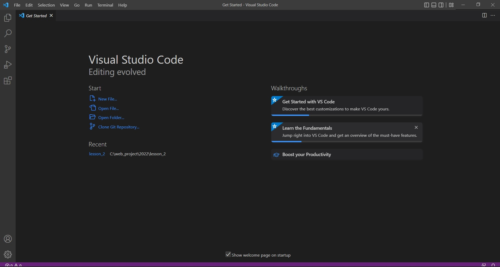

Часть I (Оптимистичная)
Скачал я значит VSCode и устанавливать его сразу давай
Все пункты я выполнил четко:
-
Скачал:
-
Открыл и галочки поставить не забыл:
-
Разрешил то то:
-
Разрешил то это:
-
Разрешил и это тоже:
-
Разрешил то то:
- Установил:
-
Запустил:
 - Залогиниться, я тоже не забыл:
Часть II (Реалистичная)
Расширение Setting Sync скорее качать и плагины фрилансера себе добавлять
но вот незадача, что то не так
Спешка мой враг!
Вникаю я сильно в происходящий процесс
и задачу сложную решить надо мне позарез:
-
и так
-
и сяк
Да что то все не так.
и чат почти не помог никак..